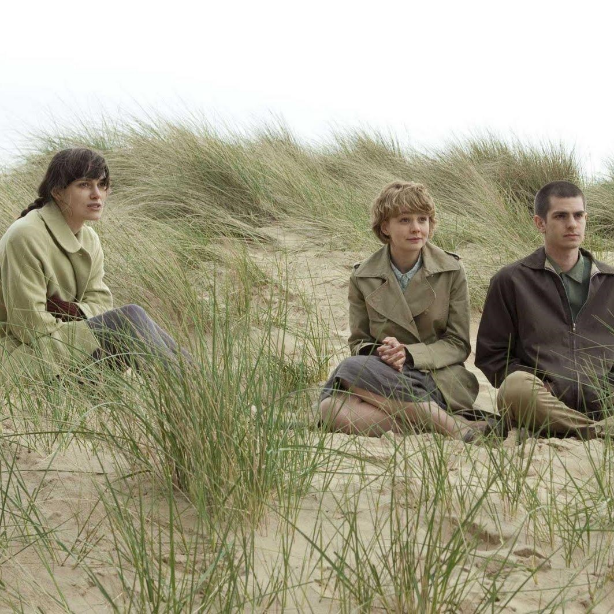

NEVER LET ME GO
Mark Romanek, 2010

The limits of beauty or, more rightly, the uses of visual beauty are revealed in the adaptation of Kazuo Ishiguro’s highly regarded dystopian novel “Never Let Me Go.” Directed by Mark Romanek, this coming-of-age story involves three British friends who are raised with others of their kind in a group home that proves more Orwellian than Dickensian. In time, they timidly make their way into the world, which turns out to be crueler than most of us would, I suspect, like to believe. Though here cruelty is done so prettily and with such caution that the sting remains light, giving the entire enterprise the aspect of a tasteful shocker.
The unkindness emerges gradually, teased out through meaningful conversations and significant scenes that the screenwriter Alex Garland has scrupulously extruded from the novel. The story begins in the 1990s on a hushed note, with the narrator, Kathy (Carey Mulligan), who calls herself a “carer,” reminiscing about her childhood while watching a man, Tommy (Andrew Garfield), as he’s readied for an operation. Along with their friend Ruth (Keira Knightley), Tommy and Kathy grew up with hundreds of others in Hailsham, a boarding school tucked into a lonely pastoral pocket. There, watched over by Miss Emily (Charlotte Rampling) and the other adults, all called guardians, the children did what children do, playing, quarreling, forming friendships, while also receiving peculiar instruction about their ghastly future as organ donators.
Like the children, you initially have only a partial view of their lives, how they came to be at Hailsham and why, so that you learn with them. Much as Mr. Ishiguro does, Mr. Romanek reveals his secrets slowly and scatters his hints carefully, isolating crucial moments, like the children’s — and later the adults’ — indifferently passing their metal bracelets over a kind of device as if they were workers electronically punching the clock. The first time you see them do this, it raises a question that, like other Hailsham rituals and curiosities, remains unanswered. By the time the young adults swipe in, the casualness of their gestures, the nonchalance with which they wear these electronic leashes, will give you pause.
You might even feel something too, though your emotional response to the slow-creeping horror will most likely soon die, snuffed out by directorial choices that deaden a story already starved for oxygen. From one angle, Mr. Romanek, a music-video director who turned to filmmaking with the 2002 feature “One Hour Photo,” makes impeccable choices. Working with the cinematographer Adam Kimmel and the production designer Mark Digby, Mr. Romanek creates a plausible, coherent world, particularly at Hailsham, where the children’s monochromatic uniforms and their muted affect are mirrored by interiors similarly drained of vibrancy. Colors don’t pop in this world, and neither does anything else: it all looks and feels washed in gray, despite the splashes of dulled green and blue, and the sound of one child yelling.
Despite the story’s monochromatic colors, literal and emotional, the scenes at the institution are among the strongest, partly because the mysteries are still shrouded and partly because the children, being both children and unknowns and therefore generally lacking in self-conscious mannerisms, make better company than the three occasionally struggling adult leads. Eventually, the story shifts from the past to the near past, when Kathy, Ruth and Tommy have left Hailsham for some more dilapidated and cheerless accommodations called the Cottages. Ruth and Tommy are together now, leaving Kathy to watch from the sidelines. Unlike at Hailsham, where they never strayed outside the school’s boundaries, the three friends leave the grounds, at one point taking a trip to find someone obliquely referred to as Ruth’s “possible.”
To spell out the exact definition of the “possible” or the story’s other highlighted words, like “donations” and “completion,” would be unfair. One of the pleasures of “Never Let Me Go,” on the page and on screen, comes from the detective work the story requires, whether you’re noting Mr. Ishiguro’s use of verbs like “huddle” and “wander,” or the way that Mr. Romanek groups actors in the image. All this tells you something, as does Ms. Knightley and Mr. Garfield’s droopy, loose-limbed physicality, which has none of the coiled energy of youth and serves the story, even if neither actor can manage its delicate passages. Ms. Mulligan, her dimples largely in retreat, fares better without lifting the film to where Mr. Romanek would like it to go.
In one pivotal scene, a perfectly lighted Ms. Mulligan stares out at a perfectly framed slice of countryside and in a soft near-monotone needlessly explains the film we’ve been watching. Everything looks as it sometimes does in the movies, including the large tree that looms over her like a sheltering hand, the soft light that spills around her and even the scraps of refuse fluttering on wire fencing before her. Everything is in its place, including the overly tidied-up meaning. Alas, what’s missing is the spark of life, the jolt of the unexpected — something beyond tears — to puncture the falseness of a film world, which, by its insistence on its own beauty, obscures the tragedy that the three characters, by their nature, cannot express.
| Ratings: | R (Sexuality|Nudity) |
| Genre: | Sci Fi, Drama |
| Original Language: | English |
| Director: | Mark Romanek |
| Producer: | Allon Reich, Andrew Macdonald |
| Writer: | Alex Garland |
| Release Date (Theaters): | Sep 15, 2010 Limited |
| Release Date (Streaming): | Feb 26, 2013 |
| Box Office (Gross USA): | $2.4M |
| Runtime: | 1h 44m |
| Production Co: | DNA Films, Film 4, Fox Searchlight |